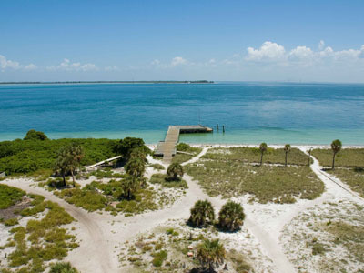
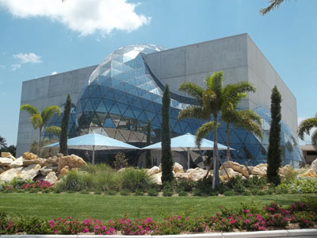
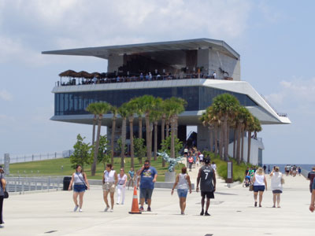
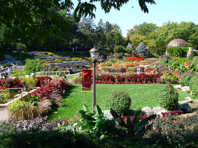
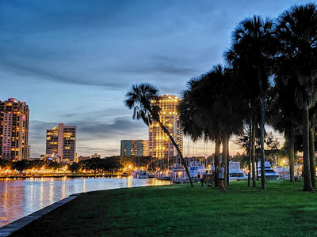
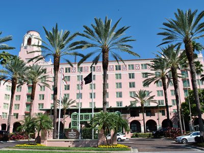
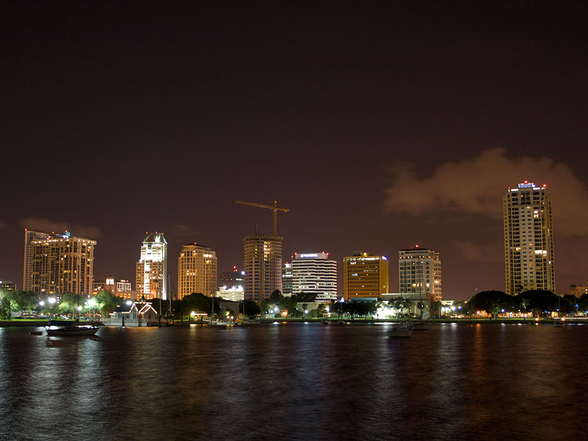

City is the fifth-most populous city in Florida, the second-largest city in the Tampa Bay Area, after Tampa, and is located on the Pinellas peninsula between Tampa Bay and the Gulf of Mexico
Featured Locations
The Don CeSar
Hotel located in St. Pete Beach, Florida gained renown as the Gulf playground for America's pampered rich at the height of the Jazz Age

Ramos Keith, U.S. Fish and Wildlife Service, Public domain, via Wikimedia Commons; Image Size

Egmont Key State Park and National Wildlife Refuge
State Park located on the island of Egmont Key, at the mouth of Tampa Bay, can only be reached by boat or ferry
Fort De Soto Park
Park featuring five offshore keys, or islands, and features two piers, beaches, picnic area, hiking trails, bicycling trails, kayak trail, and a ferry
The White House from Washington, DC, Public domain, via Wikimedia Commons; Image Size Adjusted
.jpg){kind=link}
Morean Arts Center
Center displays works by local, national and international artists, and includes two additional exhibits in St. Petersburg: the Chihuly Collection, and the Morean Center for Clay

Ebyabe, CC BY-SA 3.0, via Wikimedia Commons; Image Size Adjusted

Salvador Dalí Museum
Art museum in St. Petersburg dedicated to the works of surrealist artist Salvador Dalí
St. Pete Beach
Coastal city formed from the towns of Pass-a-Grille, Belle Vista, and St. Petersburg Beach ,and known as a tourist destination

Jackdude101, CC BY-SA 4.0, via Wikimedia Commons; Image Size Adjusted

St. Petersburg Pier
Landmark pleasure pier extending into Tampa Bay from downtown St. Petersburg

Babymestizo, CC BY-SA 3.0, via Wikimedia Commons; Image Size Adjusted

Sunken Gardens
4 acres of well-established botanical gardens that have existed for more than a century, and are one of the oldest roadside tourist attractions in the United States
Sunshine Skyway Bridge
Cable-stayed bridge spanning the Lower Tampa Bay connecting St. Petersburg, Florida to Terra Ceia and is considered a symbol of Florida

Calmuziclover, CC BY 2.0, via Wikimedia Commons; Image Size Adjusted

Vinoy Park
11.6-acre park located on the downtown waterfront of St. Petersburg named after the Vinoy Park Hotel, which sits adjacent to the park

Elisa.rolle, CC BY-SA 4.0, via Wikimedia Commons; Image Size Adjusted

Vinoy Park Hotel
Historic Mediterranean Revival-style hotel opened in 1925 and located in St. Petersburg on the bayfront area of downtown
Overview
St. Petersburg is a city on the Pinellas Peninsula on Florida's Gulf Coast, known as the "Sunshine City" for its sunny weather and for a record 768 consecutive days of sunshine in the early twentieth century. It is a cultural hub, with the Salvador Dalí Museum, an active arts scene, a revitalized waterfront, and a long stretch of beaches on the barrier islands to the west. The city is also the home of the Tampa Bay Rays.
Visitors come to St. Petersburg for the Dalí Museum, for the St. Pete Pier, and for the beaches at St. Pete Beach, Pass-a-Grille, and Fort De Soto Park. They also come for the pink Don CeSar hotel, for the murals and craft breweries downtown and in the Warehouse Arts District, and for the Sunken Gardens.
History
The area was home to the Tocobaga people, and the city was founded in 1888 when Peter Demens, a Russian exile, brought his Orange Belt Railway here and named it after his hometown of Saint Petersburg, Russia. It grew as a winter resort for northerners, and a 1910s publisher offered free newspapers on days without sun, which gave it the "Sunshine City" slogan. On January 1, 1914, the world's first scheduled commercial airline flight took off from St. Petersburg to Tampa. Tropicana Field, a domed baseball stadium, opened in 1990 and was the home of the Rays from 1998.
Sightseeing and Popular Landmarks
The St. Pete Pier, rebuilt in 2020, is a waterfront destination with restaurants, a playground, and a beach, and Vinoy Park and the Vinoy Park Hotel, a pink 1925 resort hotel, are on the waterfront. The Don CeSar, a pink Mediterranean Revival hotel on St. Pete Beach built in 1928, is a landmark known as the "Pink Palace," and the Sunshine Skyway Bridge is an iconic cable-stayed bridge across the mouth of Tampa Bay. Morean Arts Center has a collection of Chihuly glass, and the Chihuly Collection is nearby.
Culture and Museums
The Salvador Dalí Museum has one of the largest collections of Dalí's work outside Europe, in a modern building with a glass "enigma" bubble. The Museum of Fine Arts, the Florida Holocaust Museum, and the Morean Arts Center with its glass studio add to the arts scene, and the Mahaffey Theater hosts concerts. The city has many murals, and the annual SHINE Mural Festival in the Central Arts District draws artists from around the world.
Parks
Fort De Soto Park is a 1,100-acre county park with beaches, a fort, and trails, and was ranked a top beach in the country. Sunken Gardens is a botanical garden with tropical plants and flamingos, and Pass-a-Grille is a historic beach community on the tip of St. Pete Beach. Egmont Key State Park, reached by boat, has a lighthouse and a historic fort, and the Pinellas Trail is a popular biking path.
Sports
St. Petersburg is the home of the Tampa Bay Rays of Major League Baseball, who have played at Tropicana Field since 1998 and won the American League pennant in 2008 and 2020. The team's ballpark was heavily damaged by Hurricane Milton in 2024, and the team has been working on plans for a new stadium.
Seasons and Weather
St. Petersburg has a humid subtropical climate. Summers are hot and humid, with highs in the low 90s°F, and winters are mild, with highs in the 70s°F. The peak season runs from December through April, and hurricane season runs from June to November.
This article uses material from Wikipedia as well as information from official tourism and institutional sources. Key references include Visit St. Pete-Clearwater, The Dalí Museum, St. Pete Pier, Fort De Soto Park, Tampa Bay Rays, and National Weather Service Tampa Bay. Wikipedia material is from the article "St. Petersburg, Florida", and is available under the Creative Commons Attribution-Share-Alike License 3.0.
